A friendly tutorial about web fonts and basic typographic principles
“Web typography” refers to the appearance of all the text on
your website. It includes basic CSS text properties
like what font to use and whether it should be italic or not, but typography
is much more than that. It’s about the space between and around letters,
words, and lines. It’s the size of different runs of text in relation to
one another, and the history behind each font family.
A lot of your typography decisions will come from a designer. The only
problem is that typography is an invisible art. To actually understand what
your designer is asking for, you need to be able to see typography the
same way they do.
This chapter isn’t just about the mechanics of adding web fonts to
your site or the CSS properties to move your text around. We’ll also
explain how to properly leverage all these tools to make beautiful,
professional websites. By the end of the chapter, you should not only
know what your designer is talking about when they say something like,
“Can we increase the leading of that paragraph?”, but also
understand why they want you to increase it.
You may forget the specific CSS properties, but the typographic concepts
we’re going to cover will stay with you for the rest of your life because
they aren’t arbitrary rules—they’re grounded in function.
They make your content more readable and help you communicate your message more
effectively.
A Brief History of Web Fonts
We’re going to start this chapter by learning how to display your web
pages in a custom font because that’s the most exciting aspect of modern
web typography. However, web fonts have changed a lot over the last few years,
so before we can start building out our example, we need a little primer on the
various font formats floating around the Internet.
Web Safe Fonts
Long, long ago, web developers only had “web safe fonts” at
their disposal. These were a collection of a dozen or so fonts that were
pre-installed on most computers. There was no such thing as a custom font file
that you could send to browsers to use on your website.
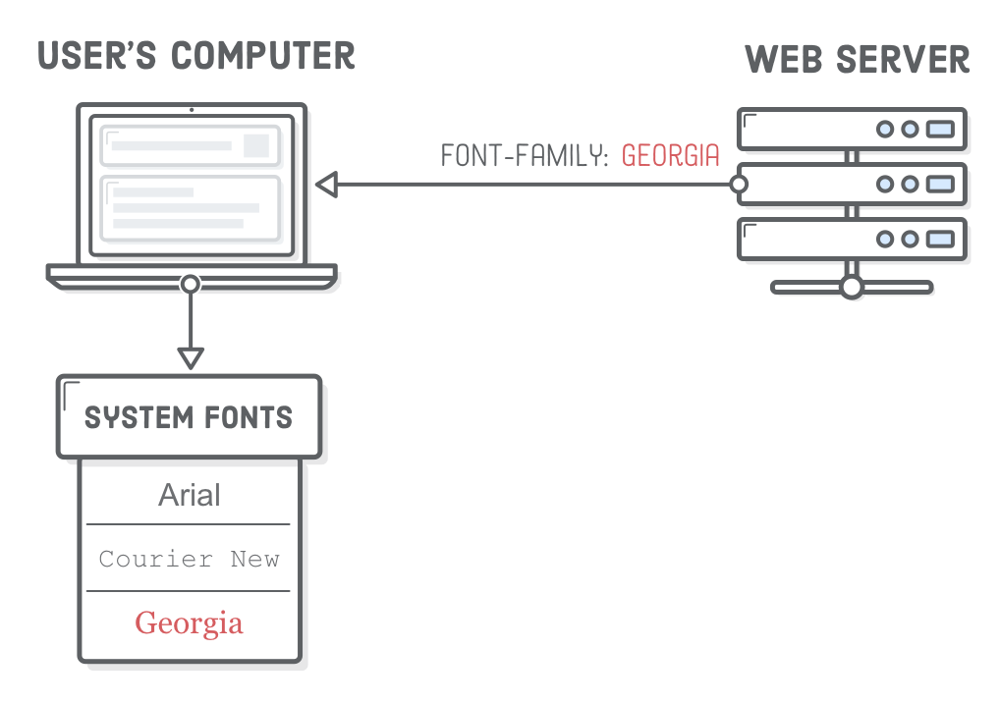
If you needed a special font, your only option was to export an
image of the text you wanted to display and include it in your web page with an
<img/> element. This was ridiculously limiting for web
designers and resulted in some pretty hacky situations for developers.
Honestly, we don’t know how everybody survived through that era of HTML
and CSS.
Custom Web Fonts
Around 2010, browsers began supporting custom web fonts, which was great,
except for the fact that each browser and device required a different file
format. Accordingly, most websites provided 4 different web font files:
File Format
Browser/Device
.svg
Very old Safari (iOS and Desktop)
.eot
Internet Explorer
.ttf
Everything except Internet Explorer
.woff
Newer browsers
This resulted in the “Bulletproof
@font-face syntax”, which you’ll likely
encounter at some point in your web development career.
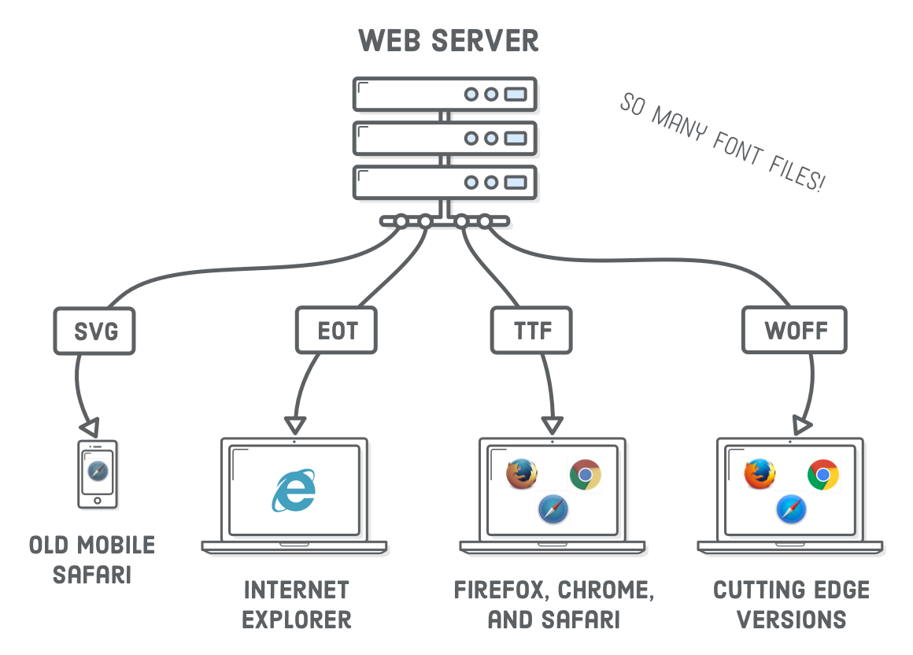
WOFF Fonts
Recently, the industry has standardized on the Web Open Font Format (WOFF),
so things have gotten a little bit simpler for us. Over 90% of modern browsers support
.woff fonts, and support for its next evolution,
.woff2, is growing. WOFF2 is similar to the original WOFF format,
but offers a significant reduction in file size (which means better
performance).
Eventually, you’ll only need to support WOFF2, but right now, we
suggest providing both WOFF and WOFF2 web fonts to get decent coverage for
older browsers and improved performance on modern ones. Unless legacy browsers
make up a large chunk of your target audience, .ttf,
.svg, and .eot fonts are a thing of the past.
Where to Find Web Fonts
There’s a ton of places on the web where you can download both free
and premium web fonts, but our three favorites are listed below. Again, which
font to use is usually up to your designer (and their budget), but as a
developer, it’s still good to know the trade-offs between these
options.
Note that Font Squirrel and Fontspring offer both web fonts and desktop
fonts (.otf and .ttf files). WOFF is designed
specifically for the needs of the modern web, while desktop fonts contain extra
functionality useful for graphics editing programs like Adobe Illustrator. Be
sure to download or purchase the web font version of the fonts you want to
use—not just the desktop version.
Setup
Ok! We’re ready to experiment with web fonts. We’re going to be building
this example website. We figured you probably don’t want to
start this one from scratch, so go ahead and download the initial project. Unzip it and open
up the web-typography folder with your favorite text editor. If
you don’t have a favorite text editor, you might want to check out Atom.
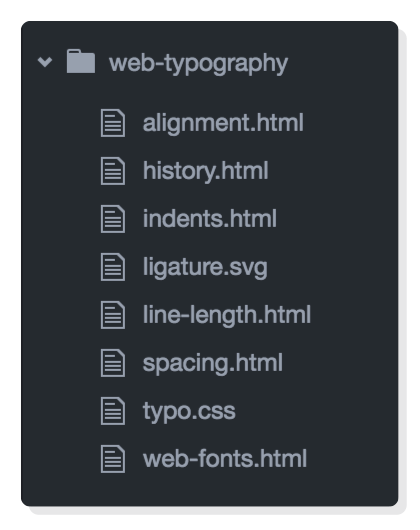
We’ve got 6 HTML documents all using the same typo.css
stylesheet. We’ll be demonstrating various typographic principles by adding
some page-specific styles to
each of these HTML files.
Open up one of the HTML files with a web browser, and you’ll find that our
initial project is pretty close to the final example, minus all the web fonts
and other CSS typography properties.
Locally Hosted Web Fonts
There are two distinct methods of adding web fonts to your website:
locally hosted or externally hosted. We’ll take a look at both in this
chapter. First, we’ll be adding a locally hosted web font to our example
project. This is a three-step process:
Download a web font and add it to your project.
Embed the web font in your stylesheet.
Use the font elsewhere in your stylesheet.
We’ll be experimenting in the web-fonts.html and
typo.css files. Go ahead and open those up in your text editor
if you haven’t already.
Hosting a WOFF File
So, we need to get our hands on a web font. Our example uses the free Roboto
font, which you should download from Font
Squirrel. Make sure to click the Webfont Kit tab, not the
Download TTF button. Unclick all the formats except
WOFF, since that’s the only one we’ll be using, then click the
Download @font-face Kit button.
This will give you a ZIP file with a license, some instructions, and a
web fonts folder containing a ton of subdirectories. The
Roboto font comes in a bunch of different font faces like light, regular, bold,
italic, and condensed. Each of those folders contains a different face. The one
we want is called roboto_light_macroman. Open up that folder and
copy the Roboto-Light-webfont.woff file into our
web-typography project.
Embedding a Web Font
Sweet. We’ve got a WOFF file. To actually use it in our web page, we
need to embed it into our stylesheet with the @font-face
“at-rule”. Web fonts must always be included at the top of
a stylesheet, so add the following to the very beginning of
typo.css:
The font-family property defines how we’ll refer to this
font later on. This operates as an internal label, so it can be anything you
want. It doesn’t need to relate to the official name of the
font, but it’s usually more intuitive if it does. As we’ll see in a
moment, it’s a good idea to keep the name as generic as possible (e.g.,
Roboto instead of Roboto Light).
Next, we have the src property, which defines the path to the
.woff file via the url() notation. The path can be absolute,
relative, or root-relative. If you use a relative path like we did here, it
will always be relative to the .css file—not the HTML
document. The format() notation lets browsers know which web font
file format it is.
If you reload web-fonts.html page, you won’t see any
change because @font-face only gave us access to our
.woff file. We still need to use it somewhere else in our
stylesheet.
Using a Web Font
Remember from Defining
Fonts that the CSS font-family property defines which font a
particular HTML element uses. After adding our @font-face at-rule,
we can use Roboto as a valid value for font-family
anywhere else in our stylesheet.
Let’s make Roboto Light the default font for our entire example project
by changing the font-family in the body selector of
typo.css:
body {
font-family: 'Roboto', sans-serif; /* Add 'Roboto' here */font-size: 18px;
line-height: 1.8em;
color: #5D6063;
}
Everything should now render as Roboto Light, which means we lost
our comparison with the sans-serif system font in web-fonts.html.
Fix this by adding a page-specific style to
the <head> of our web-fonts.html file:
The .system-fonts class is applied to the second box in
web-fonts.html. The above rule takes precedence over the
body rule in typo.css, so when you open up
web-fonts.html in a browser, you should see our Roboto Light web
font on the top and the default system font on the bottom:
Font Families and Font Faces
A single font “family” is made up of multiple font
“faces”. Each font face is a different weight or style in the
family. “Weight” refers to the boldness of a particular face, and
“style” refers to whether it’s roman (upright), italic,
condensed, extended, or some other variant in the family.
In our example, Roboto Light is one font face in the Roboto family. The
other 17 faces in the ZIP file we downloaded earlier can be visualized like
so:
In CSS, font weights are expressed as numeric values between 100 and 900.
Fortunately, there are relatively standardized, human-friendly terms for each
of these numeric values. “Black” usually means 900,
“bold” is 700, “regular” is 400, etc. As you can see
above, most families don’t supply a face for every single weight. Roboto
is missing “extra light” (200), “semi bold” (600), and
“extra bold” (800).
It’s worth noting that each style and weight combination is designed
as an entirely distinct face. In a high-quality font family, the condensed
styles aren’t simply squashed versions of the roman faces, nor is the
bold face merely a thicker version. Each letter in every face is hand-crafted
to ensure it provides a uniform flow to its text.
This is particularly apparent in the italic and roman faces of many serif
fonts. For instance, the lowercase “a” in Century Schoolbook FS
(the font you’re reading right now) takes on a completely different shape
when it’s italicized.
Fakin’ It
Why does this weight and style stuff matter to us? The design of most
websites utilizes multiple faces in the same family, so we need to know how to
embed several .woff files that represent related faces.
But first, let’s take a look at what happens when we
don’t offer multiple faces. Update the left-hand paragraph in
web-fonts.html to include an <em> and a
<strong> element:
<sectionclass='section section--gray'><h2>Web Fonts</h2><p>This paragraph is using a web font call <em>Roboto Light</em>. It’s a
little more refined and lends some <strong>unique character</strong> to
the web page.</p></section>
When you reload the page, you’ll notice that the bold text isn’t
really all that bold. This is because it’s being synthesized. We
didn’t supply a bold font face for the <strong>
element to use, so the browser is trying to fake it by auto-converting Roboto
Light into a thicker face. The same thing is going on with the italics in the
<em> element, but it’s a little bit harder to tell.
This auto-conversion almost always results in low-quality typography.
To verify that the bold and italic faces really are being synthesized, try
adding the following rule to typo.css. The
font-synthesis property determines if a browser is allowed to fake
it or not. At the time of this writing, only Firefox actually pays attention to
font-synthesis, so this won’t work in Chrome or Safari:
/* This will only work in Firefox */em, strong {
font-synthesis: none;
}
Open up web-fonts.html in Firefox, and the
<em> and <strong> elements will no longer
be italic or bold—the entire paragraph will be in roman Roboto Light.
Multiple Font Faces (The Wrong Way)
Let’s try adding Roboto Light Italic and Roboto Bold faces to our
example project. Copy over the following files from the Roboto ZIP file we
downloaded earlier into our web-typography folder:
A .woff file represents a single face in a particular font
family, and @font-face lets us embed that face in our stylesheet.
The naive way to embed these new WOFF files would be to simply add more
@font-face declarations and change the font-family
and src properties as necessary. Try adding the following to the
top of typo.css:
/* DON'T NAME FONT FAMILIES LIKE THIS */
@font-face {
font-family: 'Roboto Light Italic';
src: url('Roboto-LightItalic-webfont.woff') format('woff');
}
@font-face {
font-family: 'Roboto Bold';
src: url('Roboto-Bold-webfont.woff') format('woff');
}
Then, to use these faces in our <em> and
<strong> elements, we need the following rules:
/* THIS IS A LITTLE AWKWARD */em {
font-family: 'Roboto Light Italic', serif;
}
strong {
font-family: 'Roboto Bold', serif;
}
This will work, and you should now see proper italic and bold fonts
when you reload web-fonts.html in your browser. The problem is
that manually specifying the font-family every time we want to use
an italic or bold font is a little weird. We should be using the CSS
font-style and font-weight properties for this.
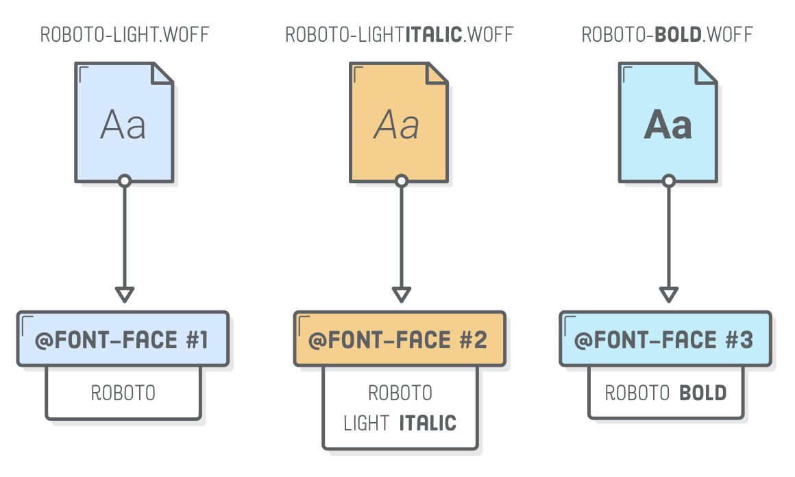
We ended up in this awkward situation because of the way we embedded our new
.woff files. Using separate font-family values in
@font-face makes them look like entirely unrelated font faces. It
doesn’t reflect the fact that they are all actually part of the Roboto
family.
For this reason, you should never use the above technique to
embed multiple faces that are in the same font family. Go ahead and
delete both of the above snippets before moving on.
Multiple Font Faces (The Right Way)
To maintain the familial relationship between our three font faces, they all
need to use a shared Roboto value for their
font-family property. To distinguish between our light, italic,
and bold faces, we’ll add font-style and
font-weight properties to the at-rule. Replace all the
@font-face declarations in typo.css with the
following:
Think of each @font-face at-rule as a description of the
underlying .woff file. The first @font-face is saying
it’s a Roboto font that’s roman (normal) and has a
font weight of 300 (aka “light”). The second says it’s also
in the Roboto family and has a weight of 300, but it’s italic. Finally,
the third at-rule lets our the browser know that
Roboto-Bold-webfont.woff contains the 700-weight (aka
“bold”) roman face.
Letting the browser know that our font faces are related makes our CSS much
more intuitive. We can set the default font family and weight in our
body selector. Then, when we want to use italics or bold for a
particular element, we can simply specify a font-style or
font-weight and the browser will pull the corresponding
.woff file:
body {
font-family: 'Roboto', sans-serif;
font-weight: 300;
/* ... */
}
em {
font-style: italic;
}
strong {
font-weight: bold; /* Or 700 */
}
These happen to be the default font-style and
font-weight values for <em> and
<strong> elements, so we don’t really need to
include the last two rules here. Note that the only human-friendly keywords
available for font-weight are normal (400) and
bold (700). Any other boldness levels need to set numerically.
Externally Hosted Web Fonts
Ok! That was complicated. Next, we’re going to explore the easier
method of using web fonts: externally hosted via Google Fonts. This lets us skip the first
two steps of locally hosted fonts. Instead of adding .woff files
to our project and embedding them with @font-face, we can let
Google Fonts do this part for us.
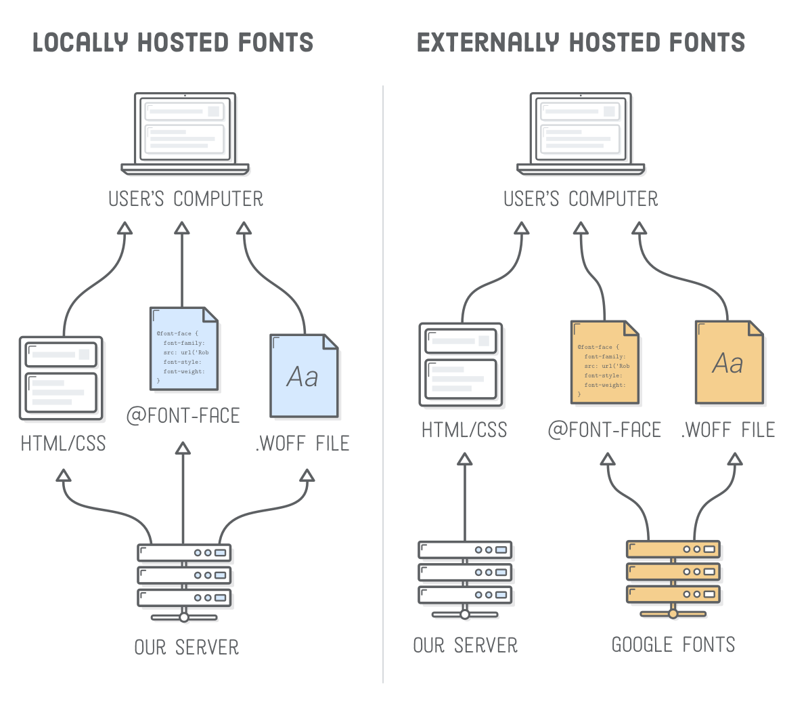
In this section, we’re going to be working on
history.html, so open up that file in both your text editor and a
web browser. If you want a brief history of typography going all the way back
to the first printing press, take a quick read through the example text. Right
now, each section in history.html is using Roboto Light, but
we’re going to change all of them to be representative of the period
they’re talking about.
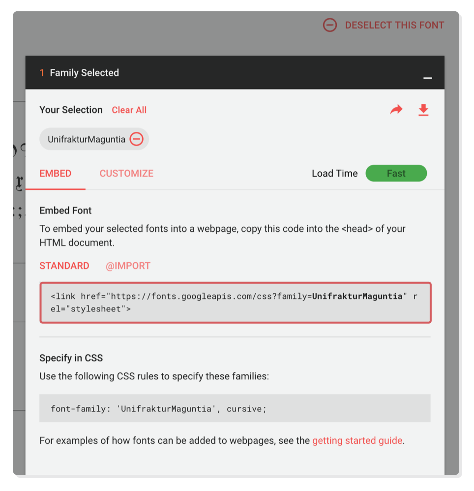
Let’s begin by changing the font for the Gothic/Blackletter
section. In Google Fonts, search for
UnifrakturMaguntia. It should look like something a monk
wrote in the middle ages. Click Select this font. In the
pop-up menu, you’ll see a <link/> element. Copy this
into the <head> of history.html, above the
<link/> element that includes our typo.css
stylesheet.
Remember that <link/> is how we include an external
stylesheet, and that’s exactly what the above HTML is doing.
However, instead of linking to a local CSS file, it’s including some
CSS defined by Google Fonts. If you paste the href value into your
browser, you’ll find the same @font-face declaration that we
used in the previous section—except we didn’t actually have to
write it this time. Yay!
Now that we’ve embedded our UnifrakturMaguntia web font,
we should be able to use it to style any HTML element we want. Add the
following to the <head> of history.html:
That first section has a class='blackletter' attribute, so it
should now be printed in gothic letters:
Google Fonts are a quick and easy solution, but professional sites should
typically use locally hosted web fonts. This gives you a lot more flexibility
(you’re not limited to Google’s font offering) and can have
performance/reliability gains if you’ve optimized the rest of your site
correctly.
Too Many Font Files
Speaking of performance, let’s do something awful. There’s
another 10 sections on our history.html page, and we want to give
each one its own web font. We can embed multiple fonts in a single
<link/> element, so change our Google Fonts stylesheet to
include the rest of them:
Note that you can generate this in Google Fonts by selecting multiple fonts
before copying the <link/> element. Next, add all these new
fonts to the <style> element of
history.html:
Now, each section of history.html is rendered in a font from
the era it’s describing. This serves as a nice introduction to the
historic significant of different fonts, but you should never, ever
include this many web fonts on a real web page.
Don’t forget that each web font is actually a .woff or
.woff2 file that your browser needs to load before it can render
the page. More fonts means longer load times. The key to using web fonts
effectively is to find a balance between performance (fewer web fonts) and a beautifully typeset
document (more web fonts).
And that’s more than you could ever want to know about web fonts. The
rest of this chapter shifts gears into basic typographic principles. These are
simple guidelines (with simple CSS implementations) that often make the
difference between a professional web page and an amateur one.
Paragraph Indents
Separating paragraphs from one another is one of the most fundamental
functions of typography. There’s two generally accepted solutions: either use
a first-line indent or a margin between the paragraphs. Your readers
(hopefully) aren’t stupid—they don’t need two signs that a
new paragraph is happening, so never use both an indent and a margin.
That would be redundant.
The CSS text-indent property defines the size of the first-line
indent of a particular element (usually a <p>). We can
explore this in our indents.html page. Go ahead and change the
existing bottom margin styles in the first section to an indent by adding the
following rules to the <style> element:
Note that the first paragraph after a heading should never be indented
because, well, it’s usually pretty obvious that it’s a new paragraph. This is a
pretty good use case for the :first-of-type
pseudo-class.
And here’s a negative example so we remember what not to do.
Add this to the page-specific styles in indents.html:
/* DESIGNERS WILL JUDGE YOU FOR THIS */.never-bothp {
text-indent: 1em;
margin-bottom: 1em;
}
It might seem silly, but we’re not kidding when we say that good
designers will judge you for this.
Text Alignment
The alignment of text has a subconscious impact on how you read it.
You’ve probably never noticed it before, but your eyes don’t move
in a smooth motion as they read over a paragraph—they jump from word to
word and from line to line. Your eyes fixate on certain spots and skip over
other ones.
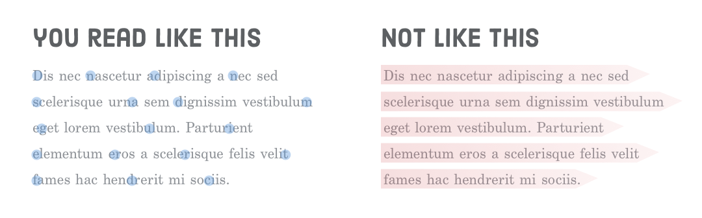
In a well-designed HTML document, text alignment is never an arbitrary
decision. It takes into account this little bit of human physiology. Good text
alignment actually makes it easier for users to read your content by giving
their eyes an anchor to jump to when they move from line to line.
The next few sections explain the proper times to use left, center, right,
and justified text alignment. All of these examples rely on the text-align
property, which controls the text alignment of a particular HTML element.
We set up the alignment.html page in our example project with some
convenient scenarios.
Left Alignment
Most of your text should be left-aligned because it gives the reader a
vertical anchor to jump back to on every line. Long runs of text, in
particular, should almost always be left-aligned. Short runs of text and
headings have a little bit more leeway.
Left alignment is the default value for text-align, but if we
wanted to be explicit, we could add the following rule to the
<style> element of our alignment.html file:
<style>.left {
text-align: left;
}
</style>
Of course, if you’re working on a website that’s in a language
that’s written right-to-left instead of left-to-right (like Arabic), you
can go ahead and swap all this advice with the Right Alignment section
below.
Center Alignment
Center-aligned text doesn’t have that anchor, so it’s easier for
the eye to get lost when it tries to jump to the next line. It’s best
suited for short line lengths (more on that later) and for special kinds of
content like poems, lyrics, and headings.
Go ahead and center-align the second paragraph in
alignment.html with another page-specific style:
.center {
text-align: center;
}
Notice how the page now feels a little disjointed. The center-aligned second
paragraph breaks the flow of the left-aligned first paragraph. Generally
speaking, text alignment should be consistent throughout a web page. If
you’re going to center a heading, center all of your
headings.
Right Alignment
Another consideration when choosing text alignment is the relationship it
creates with the surrounding elements. For instance, take a look at that third
section in alignment.html. We want to move the image’s
caption to the left of the image and right-align it to make it look like
it’s attached to the image:
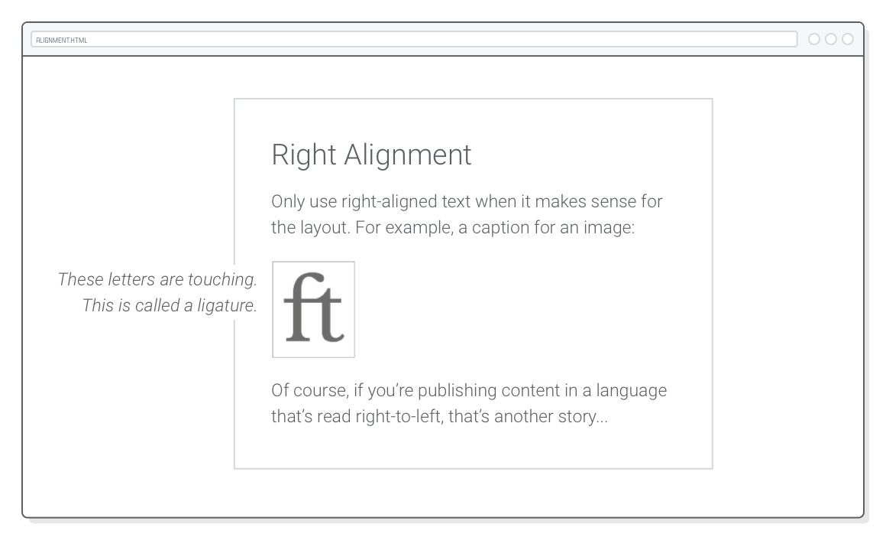
Our example image is wrapped in a <figure> and the caption text
is in a <figcaption>, so adding the
following to the <style> element of
alignment.html should result in the above layout.
This also happens to be a good example of advanced positioning. The
relative position of the <figure> sets the coordinate
system for the <figcaption>’s absolute
positioning. By nudging the caption left by 220px and giving it an
explicit width of 200px, we get a nice 20-pixel margin between the
image and its caption.
Like centered text, right alignment should usually be reserved for these
kinds of special design scenarios because its jagged left edge makes it
harder for the reader to find the next line.
Justified Text
Justified text is created by subtly adjusting the space between
words/letters and splitting long words with hyphens until each line is the same
width. Without a high-quality hyphenation engine, justified text results in
awkwardly large spaces between words. These uneven spaces make it harder for
the eye to move horizontally across the text.
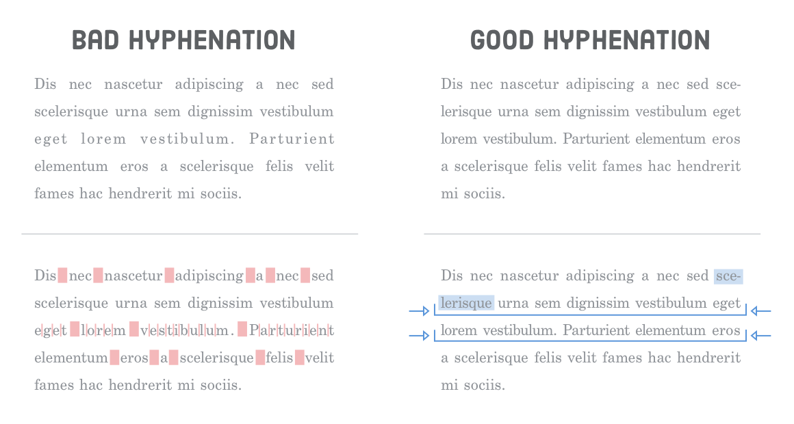
Unfortunately, most browsers don’t have any kind of built-in
hyphenation engine, so you’re better off avoiding justified text in HTML
documents. We can take a look by adding one more text-align rule
to our alignment.html file:
.justify {
text-align: justify;
}
Compare this with the left-aligned paragraph. It’s subtle, but the
left-aligned paragraph is more uniform and inviting.
Vertical Text Spacing
Just as alignment isn’t an arbitrary decision, neither is the space
between text. In this section, we’re concerned with the responsible
use of three CSS properties:
margin-top (or padding-top)
margin-bottom (or padding-bottom)
line-height
The first two should be pretty familiar by now, and they define the vertical
space between separate paragraphs. The new line-height property
determines the amount of space between lines in the same paragraph. In
traditional typography, line-height is called
“leading” because printers used little strips of lead
to increase the space between lines of text.
Together, these properties control the “vertical rhythm” of a
web page. There’s all sorts of techniques to figure out the
“optimal” vertical rhythm for a given layout, but the general principles
are:
Give things enough space to breath.
Use consistent spacing throughout the page.
To demonstrate this, we’re going to destroy the vertical rhythm in the
second half of our spacing.html page. Go ahead and add the
following page-specific styles to spacing.html
A few small changes to line height, paddings, and margins can have a
dramatic impact on the quality of a page:
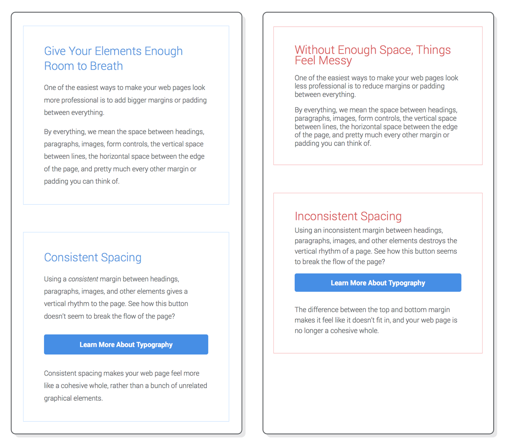
There’s a surprising amount of math and psychology that goes into
calculating the vertical rhythm of a page, but that’s a job for your
designer. As a developer, you need to know the CSS properties to implement what
they’re asking for. More importantly, you have to understand that your
designer really cares about this kind of stuff, so you should be paying very
careful attention to your margin, padding, and
line-height properties.
Line Length
If the vertical spacing of your text isn’t arbitrary, it should be no
surprise that the horizontal spacing isn’t, either. “Line
length” or “measure” refers to the horizontal length of your
text. You can think of it as the number of characters or words that fit into a
single line. Measure has everything to do with the following CSS
properties:
width
margin-left (or padding-left)
margin-right (or padding-right)
A good rule-of-thumb is to limit the number of characters on a single line
to around 80. Like alignment, this subtly affects the readability of your
content. It takes energy for your eye to move from the left edge of a paragraph
to the right, and the farther it has to scan, the faster it gets tired. Longer
lines also make it easier to get lost when you finish a line and need to jump
back to the beginning of the next line.
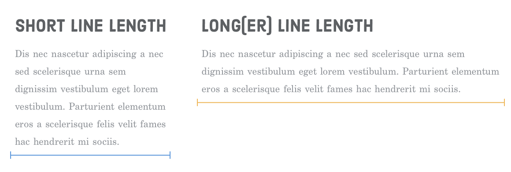
These are the reasons why so many websites (including this one) use fixed-width layouts or split
content into multiple columns on wider screens. Without constraining the width
of the page or dividing it into manageable columns, line length becomes
unacceptably long.
In our example project, the line-length.html file has decent
measure. Let’s see what happens when we break the bottom half of the page
by adding the following to its <head>:
<style>
@media only screen and (min-width: 580px) {
.not-so-manageable {
max-width: 100%;
margin-left: 2em;
margin-right: 2em;
}
}
</style>
Now, the second section stretches to fill the full width of the browser
window. It feels a little bit more unapproachable due to the long line length.
Again, the goal of good web typography is to make it as easy as possible for
visitors to digest your content.
Other Basic Typography Guidelines
That should be enough to get you on your way towards quality web typography.
Typography is a whole industry, and we’ve barely scratched the surface.
However, getting any deeper into it would be more design than web development,
so we’ll just leave you with a few final guidelines:
Use a font-size between 14px and
20px for the body element.
Use “curly quotes” and apostrophes with the
’, ‘,
”, and “ HTML entities.
Don’t use text-decoration: underline except for hover
states.
Use real italic fonts over synthesized ones if not it’s too
much of a performance burden.
If you find this stuff fascinating, Practical
Typography has a fantastic list of general rules to follow when
typesetting a document.
Summary
The goal of this chapter was twofold:
Learn the mechanics of web fonts and basic CSS typography
properties.
Understand how designers think about typography.
You might not be able to create a beautifully typeset web page from scratch
after reading this chapter, but that wasn’t the point. It was to make you
aware of the invisible art of typography. You should now have the
vocabulary to talk about things like font families, faces, weights, and styles,
as well as leading, measure, and vertical rhythm.
The most important thing you should take away from this chapter is the fact
that nothing is arbitrary in a well-designed web page. The font sizes, indent
style, text alignment, line height, margins, and every other tiny facet of the
page was carefully considered. There was a purpose behind all of these
decisions.
All of the CSS properties we’ve covered throughout this tutorial are
actually kind of simple. When it comes down to it, we’ve really just been
moving a bunch of boxes around, changing some colors, and altering the
appearance of our text. The meaning behind these things comes from
the underlying design and the business goals of the website you’re
implementing.
But, that’s for another tutorial. Believe it or not, you’ve reached the end of HTML & CSS is Hard. We’ve covered all
the HTML elements and CSS properties you need to build professional web pages.
The only thing missing is experience. Your next step is to practice all
these new skills by building a bunch of web pages from scratch.